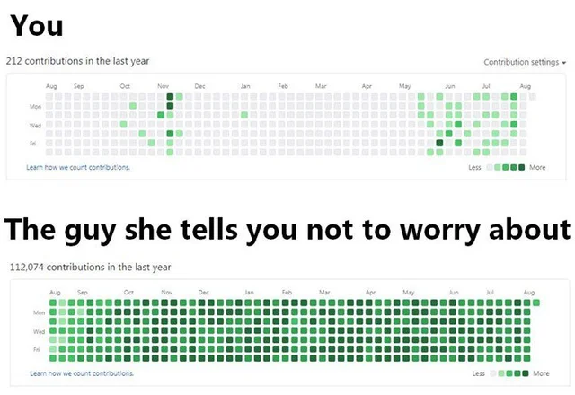
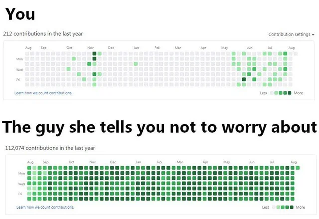

INFO:
INFO:
work in progress
ERROR:
ERROR:
this is a test error
second line
WARNING:
WARNING:
Things may break on this page, testing long text in messages
I finally managed to fix the css so it now follows standards and works across multiple browser engines, some of it is still kinda janky, but it looks way better and runs better too, it suprisingly works on a sony ereader that hasnt seen a software update since 2011(only on some of the pages) without any visual bugs too, do you think this is long enough to see if anything goes wrong with text wrapping? anyway the js is still janky af, and needs some serious cleanup from when i was trying to fix bigs, and made it into a mess(while also adding more bugs), it runs worse too, im not sure how im going to fix it, might just have to rollback the js files from an earlier commit and re implement the features that i added, if i continue this ill probably re-write most of the ui code, and make some tweaks to the backend
This page is used to test visual stuff, and to use the js console w/o overhead from any draw loops
Click here for 10 diet tips doctors & singles in your area dont want you to knowAnd now some dumb images to see how the navbar handles scrolling
 


Filled & Transparent Image Test: